Spacetime이 내세우는 것
AI(Artificial Intelligence) 도구 덕분에 앱 코드를 만들기는 쉬워졌어요. 그래도 실제로 돌아가는 앱이 되려면 데이터베이스, 서버 로직, 인증, 배포, 사용자 화면의 데이터가 서로 맞물려야 해요. 발표자는 이 조각들이 처음부터 함께 동작하도록 설계돼 있다면 어떨까라는 질문으로 Spacetime을 소개해요.
아래는 Spacetime을 만든 Clockwork Labs의 소개 페이지예요. 제목 'The whole backend, in one place' 아래에 Database, Server logic, Auth, Realtime sync 네 가지가 한 상자에 들어 있어요. 오른쪽에는 실시간으로 바뀌는 플레이어 표가 예시로 떠 있어요.
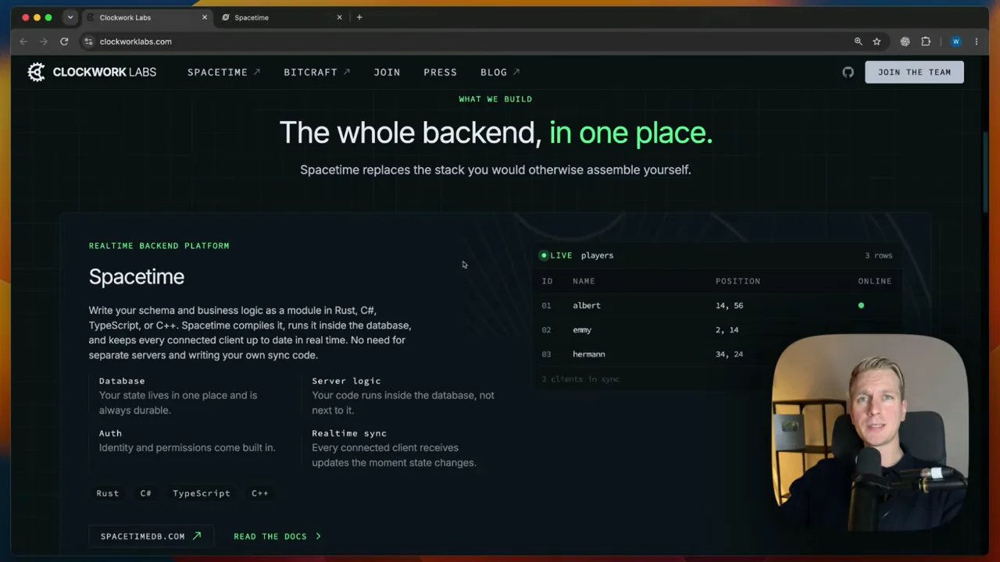
타입 하나가 스택 전체를 잇는다
발표자가 가장 힘줘 말하는 건 타입 안전한 API(Application Programming Interface)예요. 스키마에서 클라이언트, 서버, 데이터베이스의 타입이 한꺼번에 만들어져요. AI 에이전트는 코드를 쓸 때 가드레일이 필요한데, 타입이 그 역할을 잘한다는 게 발표자의 생각이에요. 스택 전체가 한 타입 체계로 이어지면 AI로 개발할 때 이득이 크다고 봐요.
배포도 단순해요. 서버, 컨테이너, 오케스트레이션을 직접 관리하지 않고, Spacetime 모듈을 쓴 뒤 spacetime publish만 실행하면 돼요. 코드는 GitHub에 공개돼 있어요. 아래 저장소 화면에서 Rust, TypeScript, C# 등 여러 언어 폴더를 볼 수 있어요.
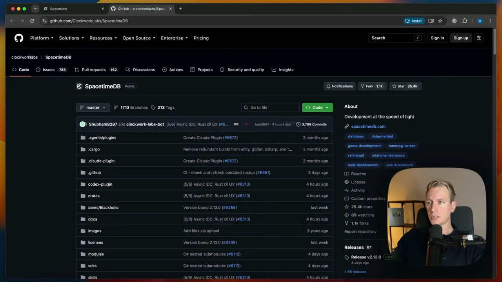
어디에 쓰면 좋을까
공식 사이트의 템플릿 목록이 쓰임새를 잘 보여 줘요. 위쪽 앱 묶음에는 Team Chat, Collaborative Board, Live Polls & Q&A가 있고, 아래 게임 묶음에는 Multiplayer Party Game, Survival Crafting Game, Turn-Based Card Game이 있어요. 모두 여러 사람이 같은 데이터를 동시에 보고 바꾸는 앱이에요.
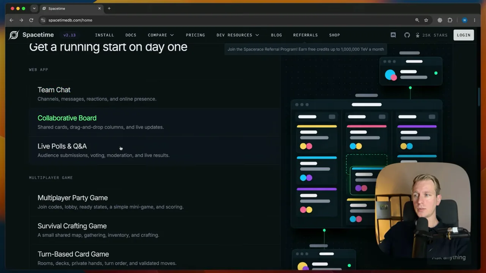
발표자가 특히 흥미롭다고 한 건 AI 에이전트를 겨냥한 설계예요. 공식 사이트에는 각 AI 모델이 Spacetime 코드를 얼마나 잘 쓰는지 잰 LLM(Large Language Model) 벤치마크 표가 있어요. 화면 맨 위 Claude Opus 5.5가 통과율 99.5%로 1위이고, 오른쪽 칸에서 인증, 기본기, 데이터 모델링 같은 영역별 점수를 볼 수 있어요.
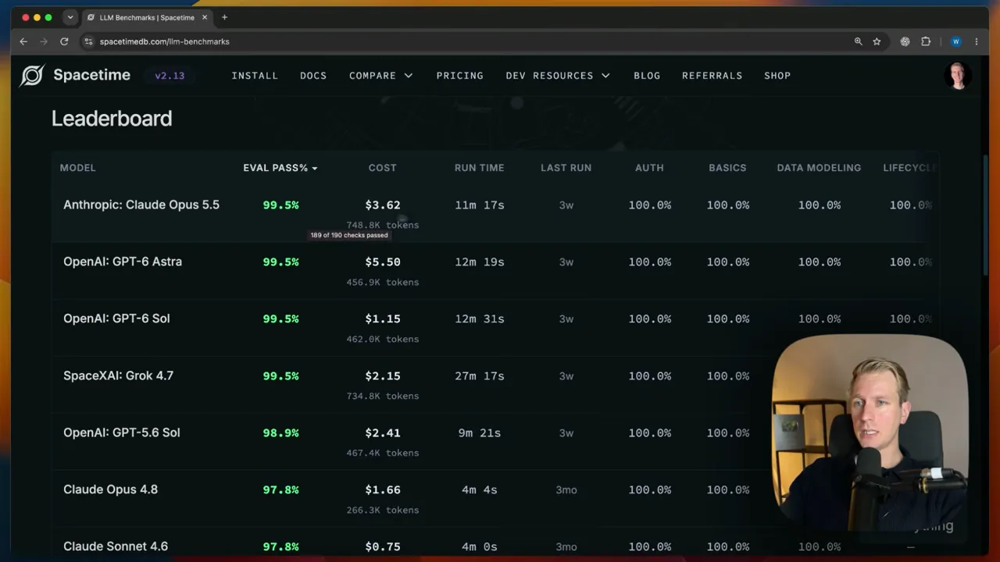
예제 앱 SeatRush와 전체 구조
설치와 초기화 방법은 공식 사이트에 나와 있고, 에이전트에 그대로 붙여 넣을 프롬프트도 있어요. 발표자는 대신 간단한 Next.js 앱에 Spacetime을 붙여 보여 줘요. 예제는 공연장이나 영화관 좌석을 고르는 SeatRush 앱이에요.
브라우저 두 개를 나란히 띄워 서로 다른 두 사용자를 흉내 내요. 왼쪽 Anonymous User 1이 A9를 누르면 초록색 'Yours'가 되고, 오른쪽 User 2 화면에서는 같은 자리가 회색 'Taken'으로 바뀌어요. 위쪽 'seats available' 숫자도 양쪽에서 함께 줄어요.
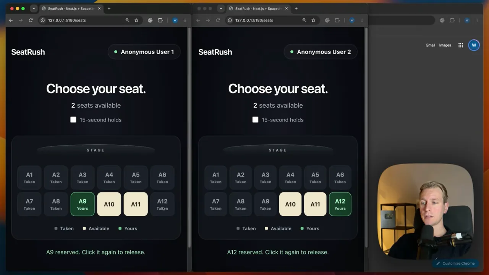
발표자는 여기서 풀어야 할 문제를 둘로 짚어요. 하나는 공유 데이터를 모두에게 실시간으로 보여 주는 일이고, 이건 보통 구현하기 까다로워요. 다른 하나는 둘이 거의 동시에 같은 좌석을 눌렀을 때 한 명만 가져가게 하는 일이에요. 이건 원자적 트랜잭션으로 풀어야 해요.
Next.js와 Spacetime은 어떻게 이어질까
아래 구조도에서 왼쪽 위 Next.js server는 await fetchVenue()로 오른쪽 SpacetimeDB에서 데이터를 가져와 페이지를 렌더링해요. 왼쪽 아래 Browser는 Spacetime에 직접 붙어서 reserveSeat({ seatId })를 보내고, useTable(tables.seat)로 바뀐 좌석을 받아요. 오른쪽 상자 안에는 퍼블리시된 모듈(reserveSeat())과 데이터베이스(seat 테이블)가 함께 있어요.
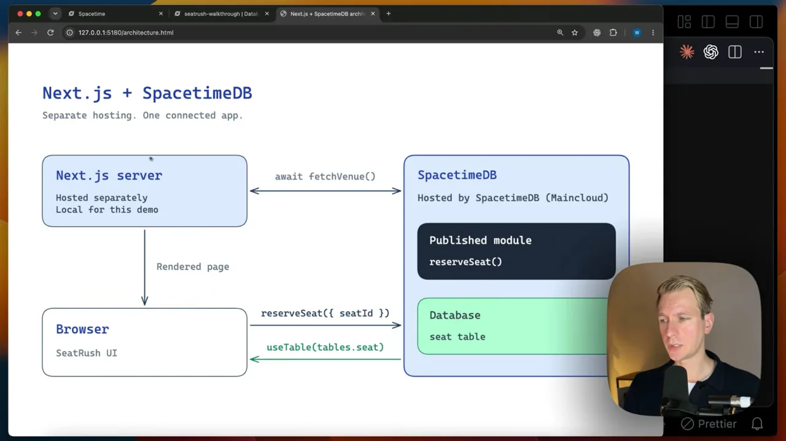
fetchVenue는 발표자가 만든 도우미 함수예요. 서버에서 처음 데이터를 읽을 때 쓰고, 좌석 예약 같은 쓰기는 브라우저에서 Spacetime으로 바로 보내요. 이 함수의 속은 4장에서 열어 봐요.
테이블, 원자적 리듀서, Maincloud 배포
프로젝트 폴더에는 평범한 Next.js 코드 옆에 spacetimedb 모듈 폴더가 하나 더 있어요. 아직 데이터베이스는 없고, 이 모듈을 퍼블리시하는 순간 만들어져요. 모듈 코드는 데이터베이스가 어떤 모양이어야 하는지 정하는 곳이에요.
아래 화면의 seat 테이블은 칸이 세 개뿐이에요. id는 기본 키, label은 A12나 B1 같은 좌석 이름, reservedBy는 t.option(t.identity())로 예약한 사람의 Identity를 담아요. 값이 비어 있으면 아직 아무도 예약하지 않은 좌석이에요.
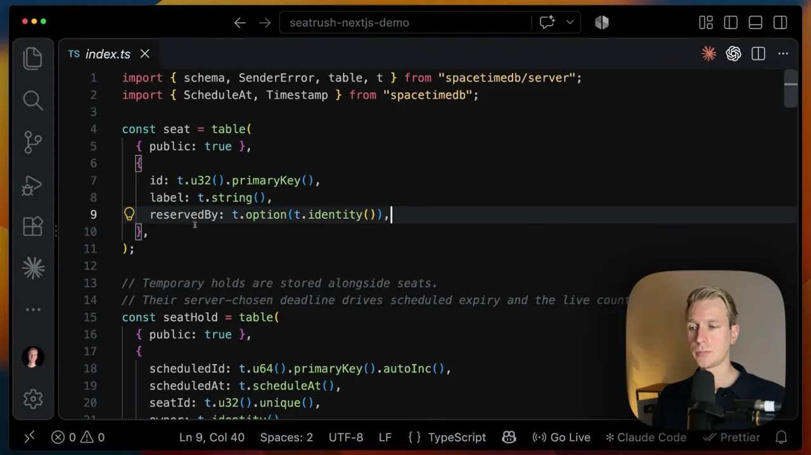
reservedBy가 비었는지로 판단해요. 아래쪽 seatHold 테이블은 6장의 임시 점유에서 다시 나와요. 영상 06:04에서 보기예약은 리듀서 하나가 맡아요
누군가 좌석을 예약하려 하면 리듀서가 실행돼요. 아래 reserveSeat는 seatId를 받아 ctx.db.seat.id.find로 좌석을 찾아요. 없으면 "Seat not found", reservedBy가 이미 채워져 있으면 "Seat already reserved"를 SenderError로 던지고 끝나요. 두 검사를 통과해야 ctx.db.seat.id.update로 reservedBy를 ctx.sender로 바꿔요.
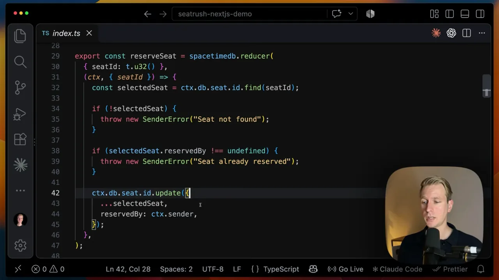
발표자가 강조하는 건 이 리듀서가 하나의 원자적 트랜잭션으로 돈다는 점이에요. 좌석이 비었는지 확인하는 일과 실제로 예약하는 일이 같은 트랜잭션에서 일어나요. 그래서 바꾸려던 내용은 전부 반영되거나 전부 취소돼요. 여러 사람이 같은 좌석을 두고 다툴 때 이게 중요해요.
checking the availability of the seat and actually booking the seat happen in the same transaction.
좌석이 비었는지 확인하는 일과 실제로 예약하는 일이 같은 트랜잭션 안에서 일어나요.
— 영상 06:38
이 모듈 코드는 Next.js 프로젝트 폴더에 함께 두지만 Next.js 앱의 일부로 실행되지 않아요. 실행은 Spacetime 쪽에서 해요.
Maincloud에 퍼블리시하기
이제 모듈을 퍼블리시해 데이터베이스와 테이블을 만들어요. Maincloud는 Spacetime의 관리형 호스팅이고, 데이터베이스와 서버 로직을 함께 맡아요. 터미널에 보이는 명령은 spacetime publish --no-config --server maincloud --module-path spacetimedb --delete-data=never seatrush-walkthrough예요.
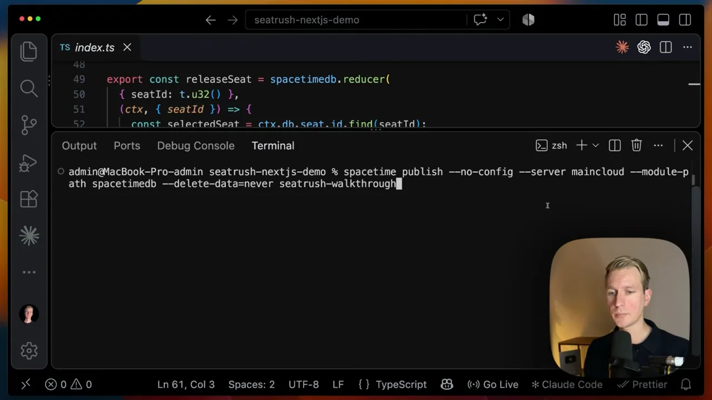
seatrush-walkthrough라는 새 데이터베이스가 생겨요. 영상 07:40에서 보기대시보드에서는 테이블별 행 수, 트랜잭션, 사용량, 오류율, 실행 상태를 볼 수 있어요. 아래 Tables 화면 왼쪽에 seat, seat_hold 같은 테이블이 있고, 오른쪽 reserved_by 칸에는 대부분 (some = 0xc200…) 형태의 Identity가 들어 있어요. 발표자가 미리 넣어 둔 데이터라 A9~A12 네 자리만 (none = ())로 비어 있어요.
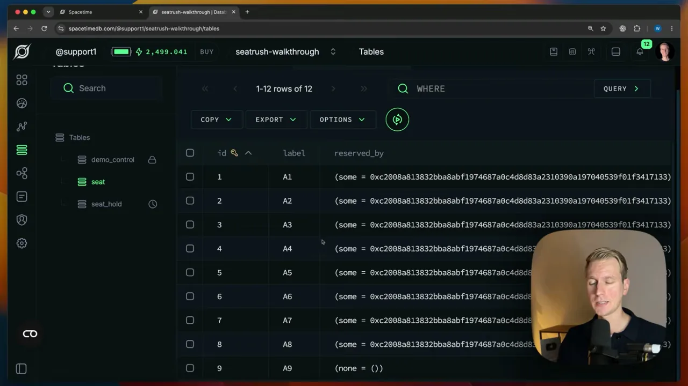
타입 바인딩과 서버·클라이언트 연결
Next.js 앱을 이 데이터베이스에 붙이려면 먼저 환경 변수가 필요해요. .env.local에는 Maincloud 주소(wss://maincloud.spacetimedb.com)와 데이터베이스 이름(seatrush-walkthrough)이 들어가요.
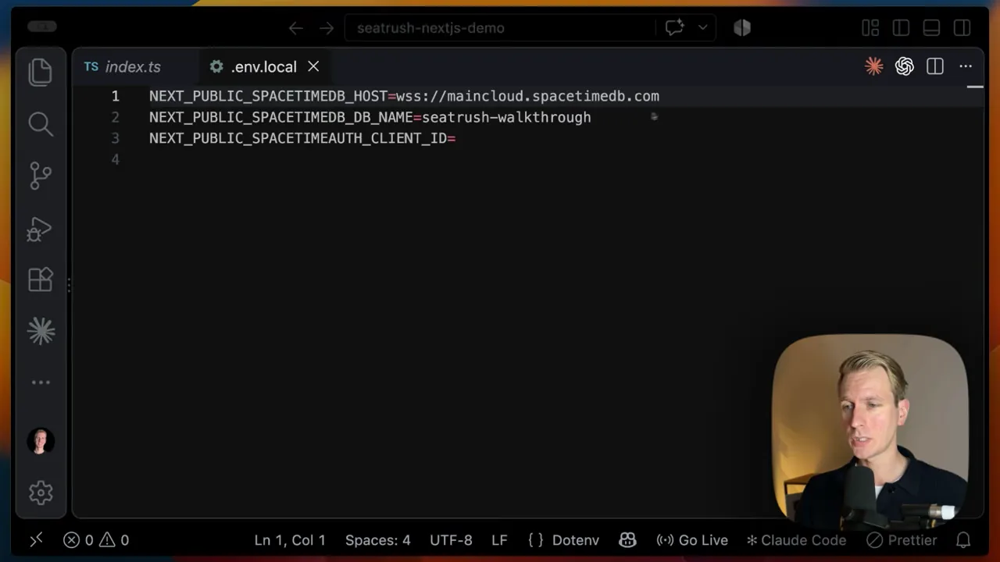
wss://로 시작해요. 클라이언트는 WebSocket으로 붙어 변경을 계속 받아요. 영상 08:28에서 보기클라이언트 바인딩 만들기
다음은 클라이언트 바인딩을 만드는 단계예요. 발표자는 NPM(Node Package Manager) 스크립트 spacetime:generate를 만들어 뒀어요. 이 스크립트는 spacetime generate --lang typescript --out-dir src/module_bindings를 실행해 로컬 모듈의 테이블과 리듀서를 읽고, Next.js가 쓸 TypeScript 코드를 만들어요.
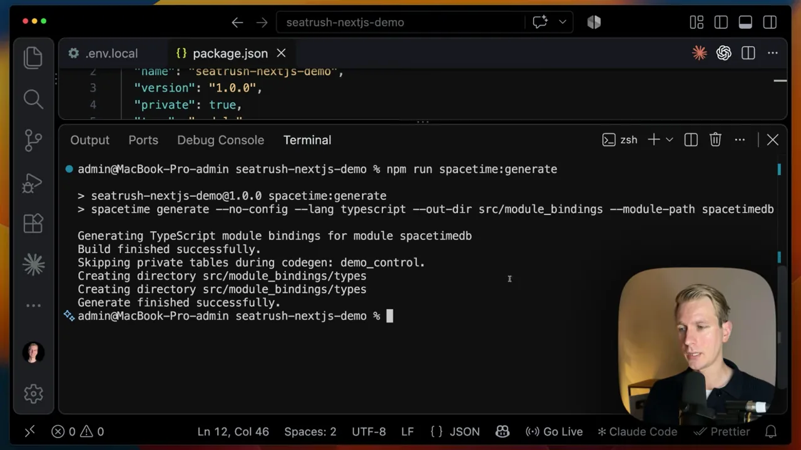
서버 컴포넌트에서 처음 한 번 읽기
데이터를 읽는 건 보통 서버 컴포넌트에서 해요. 아래 page.tsx의 SeatsPage는 await fetchVenue()로 좌석을 받아 SeatRushClient에 initialSeats로 넘겨요. 여기까지는 전부 서버에서 일어나요.
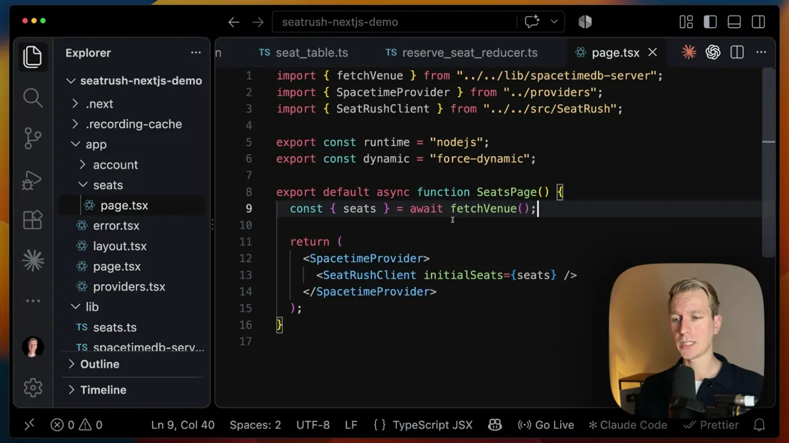
fetchVenue의 속을 보면 반복 코드가 좀 있지만 요점은 짧아요. DbConnection.builder()에 환경 변수의 호스트와 DB 이름을 넣어 연결하고, subscriptionBuilder()로 seat 테이블을 구독해요. 구독하면 처음 데이터와 이후 변경을 모두 받아요. 하지만 서버에서 한 번 읽을 때는 처음 데이터만 있으면 돼요.
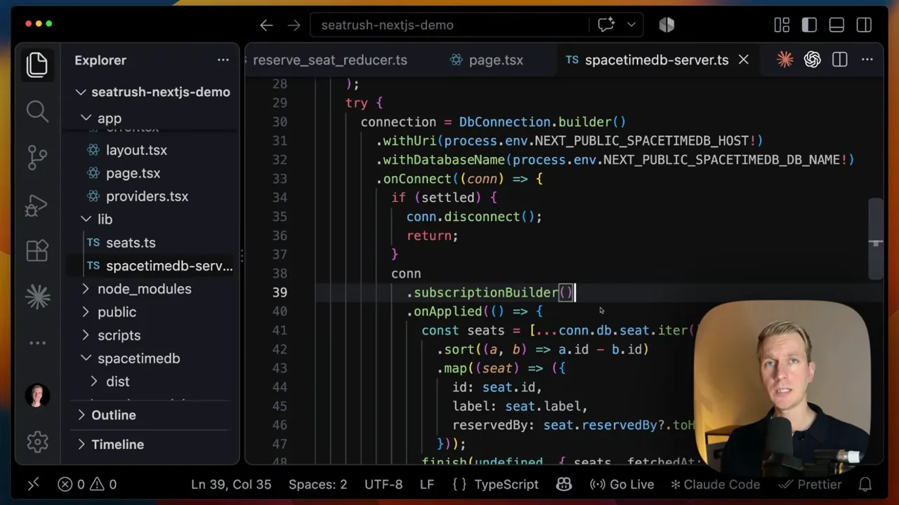
onApplied는 처음 데이터가 도착했을 때 한 번 실행돼요. 여기서 좌석을 평범한 객체 배열로 바꿔 돌려주고 연결을 끊어요. 영상 09:50에서 보기그래서 페이지를 열 때마다 연결이 계속 남는 구조가 아니에요. 페이지는 좌석 배열만 받아 클라이언트로 넘겨요.
브라우저에서 직접 붙어 구독하기
클라이언트 쪽 연결도 비슷하게 생겼어요. 다른 점은 토큰이에요. 아래 providers.tsx는 저장해 둔 토큰을 .withToken(token)으로 넘기고, 연결되면 서버가 돌려준 토큰을 다시 저장해요. 그래야 새로고침할 때마다 다른 사용자가 되지 않아요.
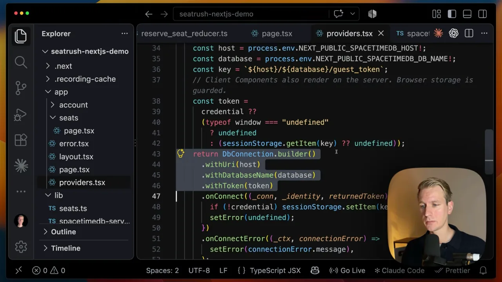
sessionStorage를 써요. 탭을 닫으면 사라지는 저장소라, 두 탭이 서로 다른 사용자로 보이는 데모에는 이쪽이 맞아요. 영상 10:26에서 보기연결이 생기면 React 컴포넌트 트리 아래의 컴포넌트들이 Spacetime의 React 훅을 쓸 수 있어요. Next.js에서는 처음 데이터는 서버에서 가져오는 게 유리하고, 그 뒤의 상호작용은 클라이언트 연결로 처리하는 식이에요.
아래 SeatRush.tsx에서 useTable(tables.seat)가 좌석 행을 구독해요. 테이블이 바뀌면 SDK(Software Development Kit)가 새 데이터를 주고 컴포넌트가 다시 그려져요. 그 아래 useReducer(reducers.reserveSeat)는 3장의 리듀서를 부를 함수를 돌려줘요.
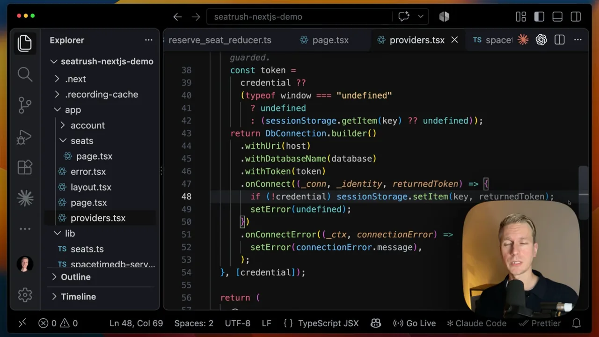
useTable, 쓰기는 useReducer로 나뉘어요. 둘 다 생성된 바인딩에서 나와서 이름과 인자 타입이 맞는지 컴파일러가 확인해요. 영상 10:44에서 보기사용자가 좌석을 누르면 그 함수에 좌석 ID(Identifier)만 넘기면 돼요. 사용자 신원은 넘기지 않는다는 점이 중요해요. 서버가 들어온 요청을 보고 누가 보냈는지 알아내요. Spacetime이 DB를 바꾸면 실시간 구독으로 새 좌석 데이터가 오고, 좌석을 그리는 부분이 새 데이터로 다시 그려져요.
내 좌석만 풀 수 있게: 소유자 확인과 대시보드
사용자는 자기가 잡은 좌석을 다시 풀 수 있어요. 이건 releaseSeat 리듀서가 맡아요. 좌석을 못 찾으면 거기서 끝나고, 찾았으면 한 번 더 확인해요. 좌석을 실제로 예약한 사람만 풀 수 있어야 하거든요. 그러지 않으면 누군가 다른 ID를 꾸며 보내 남의 좌석을 풀 수 있어요.
아래 코드의 54번째 줄이 그 확인이에요. selectedSeat.reservedBy?.equals(ctx.sender)가 아니면 "Only the owner can release this seat"를 던져요. 통과하면 seatHold에서 예약 기록을 지우고, reservedBy를 undefined로 돌려놔요.
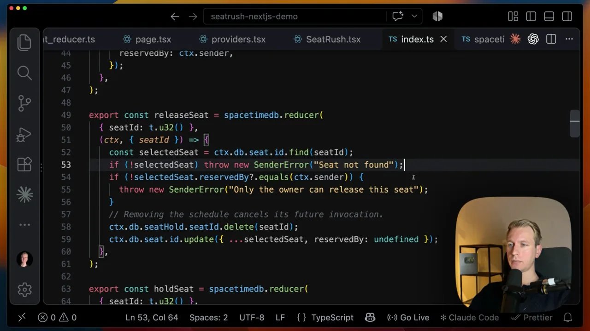
ctx.sender는 클라이언트가 보낸 값이 아니라 서버가 아는 요청자예요. 그래서 꾸밀 수가 없어요. 영상 12:19에서 보기대시보드에서 변화 확인하기
대시보드 테이블에서 9번 행 A9의 reserved_by는 (none = ())로 비어 있어요. 앱을 새로고침해도 A9는 빈 좌석으로 보여요.
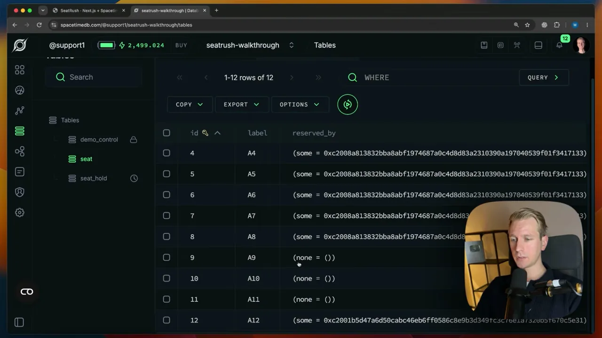
대시보드는 배포할 때 만들어진 함수도 보여 줘요. 왼쪽 Functions 목록에 reserve_seat, release_seat, hold_seat, expire_seat_hold 같은 리듀서가 함수로 올라와 있어요. Next.js 앱이 부르는 게 바로 이 함수들이에요.
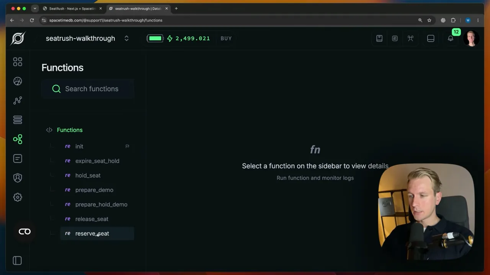
함수 하나를 고르면 지난 한 시간의 호출 수 그래프와 오류, 실행 시간 같은 정보가 나와요. 아래 화면은 reserve_seat의 CPU(Central Processing Unit) 사용 그래프와 Rows processed 칸이에요. 발표자는 이런 관측 기능이 따로 붙이지 않아도 Spacetime에 들어 있다는 점을 짚어요.
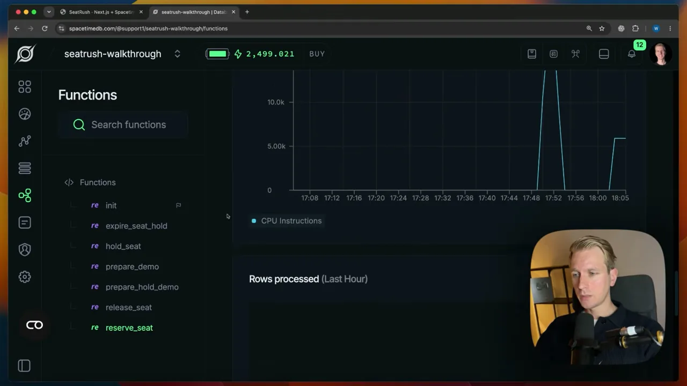
15초 임시 점유와 동시 클릭
여기까지가 예약하고 푸는 기본 동작이에요. 실제 예매에서는 좌석을 누른 뒤 결제하는 동안 잠시 붙잡아 두고, 그 안에 끝내지 못하면 다시 풀어 줘요. 데모 화면 위쪽의 '15-second holds'를 켜면 이 모드가 돼요.
아래 화면에서 왼쪽 User 1이 A9를 눌렀어요. 아래 문구가 'A9 · 15-second hold started.'로 바뀌었고, 오른쪽 User 2에게는 A9를 바로 고를 수 없어요. 15초가 지나면 A9는 모두에게 다시 열려요.
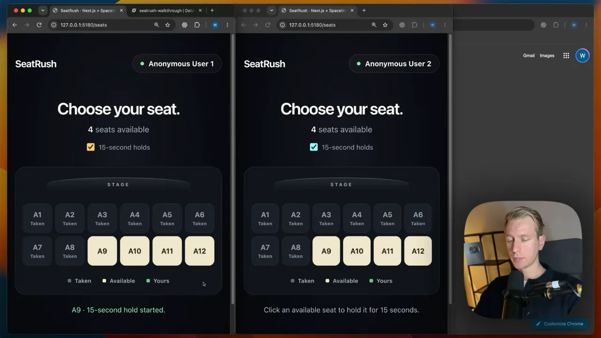
서버가 정하는 기한
점유는 holdSeat 리듀서가 시작해요. 좌석 검사는 reserveSeat와 같고, 다른 건 72번째 줄부터예요. ctx.timestamp.microsSinceUnixEpoch + 15_000_000n으로 지금부터 15초(마이크로초 단위) 뒤를 기한으로 잡아요. 주석대로 기한은 서버가 정하고, 클라이언트는 값을 넘기거나 늘릴 수 없어요.
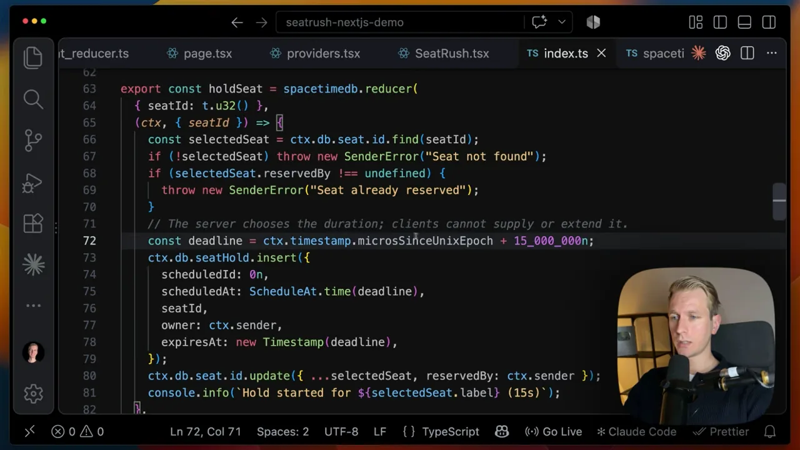
seatHold 행의 scheduledAt이 '언제 무엇을 실행할지'를 정해요. 같은 리듀서 안에서 좌석의 reservedBy도 채워서, 다른 사람에게는 점유 기간 동안만 막혀 보여요. 영상 14:24에서 보기점유 기록은 seatHold라는 별도 테이블에 쌓여요. scheduledId와 scheduledAt 칸이 있는 테이블은 스케줄 기능을 쓰는 테이블이에요. 기한이 지나면 연결된 리듀서가 저절로 불려요. 전체 흐름을 시간 순서로 그리면 이래요.
seatHold 테이블의 한 행이에요. 그래서 사용자가 창을 닫거나 새로고침해도 15초 뒤 좌석은 풀려요.만료를 맡는 expireSeatHold도 리듀서일 뿐이에요. 다른 점은 { onSchedule: seatHold } 옵션으로 seatHold 테이블에 묶여 있다는 것뿐이에요. 코드에는 몇 겹의 안전장치가 있어요. 호출자가 데이터베이스 자신(ctx.databaseIdentity)이 아니면 "Only the scheduler can expire holds"로 거절해요. 점유 기록의 scheduledId가 다르면 그냥 돌아가요. 좌석 주인이 점유 당시의 owner와 같을 때만 reservedBy를 비워요.
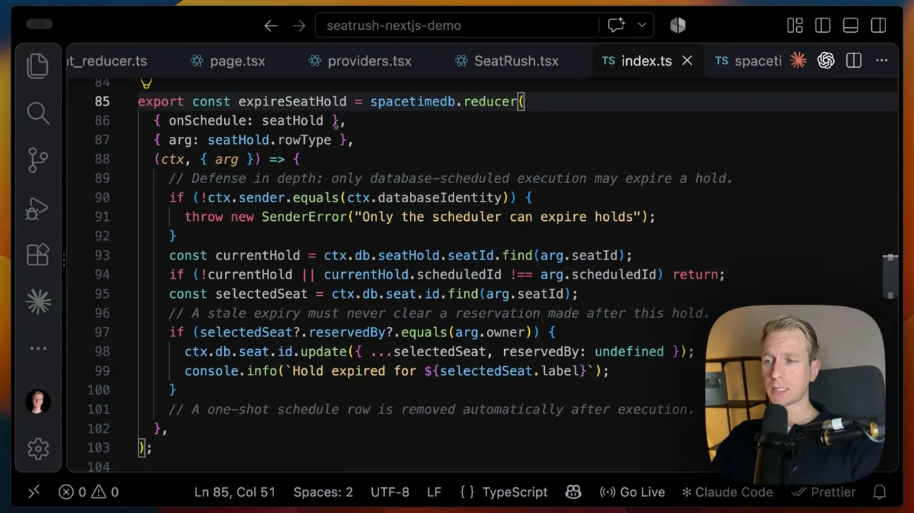
owner를 한 번 더 비교해요. 101번째 줄 주석대로 한 번만 도는 스케줄 행은 실행 뒤 저절로 지워져요. 영상 14:56에서 보기만료 리듀서는 console.info로 'Hold expired for A9' 같은 로그를 남겨요. 이 로그는 대시보드 로그 화면에 그대로 나와요. 아래는 A9로 검색한 결과예요. hold_seat의 'Hold started for A9 (15s)'와 expire_seat_hold의 'Hold expired for A9'가 짝을 이뤄요.
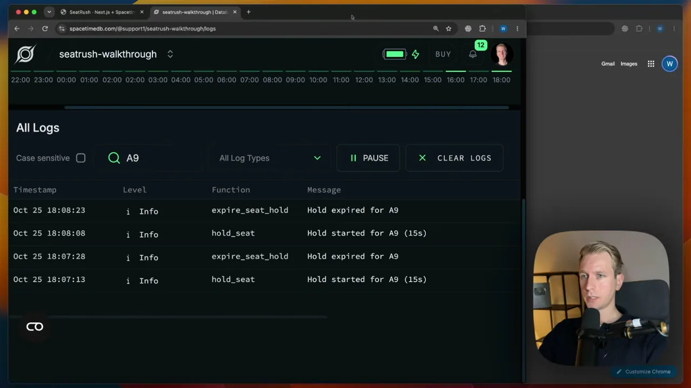
두 사람이 동시에 같은 좌석을 누르면
실제로는 두 사람이 같은 좌석을 동시에 노리는 일도 생겨요. 데모 앱의 'Request A12 in both tabs' 버튼은 두 탭에서 A12 예약을 동시에 보내요. 결과는 한 명만 성공이에요. 아래 화면에서 오른쪽 User 2는 'A12 reserved'를 받았고, 왼쪽 User 1의 데모 기록에는 'reserve · rejected: Seat already reserved'가 찍혔어요.

두 요청이 서버에서 어떻게 처리되는지 순서대로 그리면 이래요. 둘 다 같은 리듀서를 부르지만, 한 리듀서가 끝나야 그 변경이 다음 리듀서에 보여요.
sequenceDiagram participant U2 as User 2 participant U1 as User 1 participant S as Spacetime (reserveSeat) U2->>S: reserveSeat(A12) U1->>S: reserveSeat(A12) Note over S: 첫 트랜잭션: A12 비어 있음 확인 S-->>U2: reservedBy = User 2, 커밋 Note over S: 둘째 트랜잭션: A12 이미 예약됨 S-->>U1: Seat already reserved, 롤백 S-->>U1: 구독으로 A12 Taken 표시
마무리
영상에 나온 리듀서 네 개를 한 표로 모으면 이래요. 모두 같은 틀이에요. 먼저 서버에서 검사하고, 통과해야 테이블을 바꿔요.
| 리듀서 | 누가 부르나요 | 검사 | 바꾸는 것 |
|---|---|---|---|
reserveSeat | 사용자 | 좌석이 있나, 이미 예약됐나 | reservedBy = 요청자 |
releaseSeat | 사용자 | 좌석이 있나, 요청자가 주인인가 | seatHold 삭제, reservedBy 비움 |
holdSeat | 사용자 | 좌석이 있나, 이미 예약됐나 | seatHold에 15초 뒤 기한 추가, reservedBy = 요청자 |
expireSeatHold | 스케줄러 | 스케줄러가 불렀나, 같은 점유인가, 주인이 그대로인가 | reservedBy 비움, 로그 남김 |
발표자는 정리하면서 Next.js 말고 Rust, C# 등 다른 언어용 클라이언트 SDK도 있다고 덧붙여요. 아래는 공식 문서의 Rust 클라이언트 레퍼런스 페이지예요. 왼쪽 메뉴의 Clients 아래에 Rust, C#, TypeScript, Unreal 레퍼런스가 나란히 있어요.
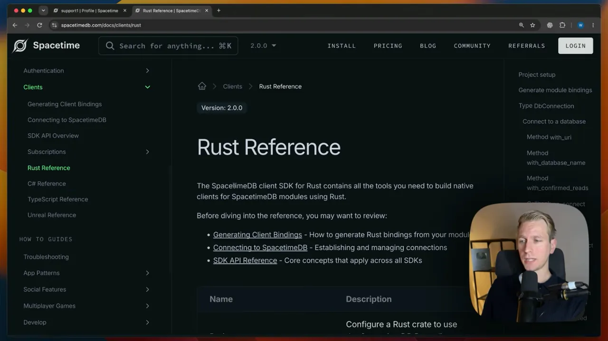